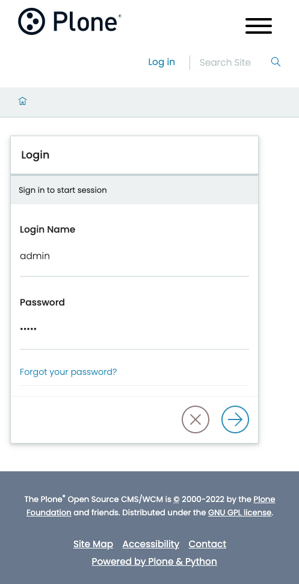

Instalar usando los paquetes
Cuando desea un control total sobre el desarrollo o los despliegues, instalar Plone usando los paquetes es una buena opción.
Requisitos del sistema
Los requisitos de hardware a continuación brindan una estimación aproximada de la configuración de hardware mínima necesaria para un servidor Plone.
Los complementos y soluciones de caché podrían aumentar los requisitos de memoría RAM.
Una única instalación Plone es capaz de correr múltiples sitios Plone. Podrías alojar varios sitios Plone en el mismo servidor.
- Casi cualquier sistema operativo moderno, incluyendo Linux, macOS y Windows, pero se recomienda un sistema operativo de tipo Unix/Linux.
- Se requiere un mínimo de 256MB de RAM y 512 MB de espacio de intercambio por cada sitio Plone. Se recomiendan 2 GB o más de RAM por cada sitio Plone.
- Se requieren, al menos, un mínimo de 512 MB de espacio libre en disco. Se recominedan, al menos, 40 GB o más de espacio libre en disco.
Pre-requisitos para la instalación
- Python 3.8, 3.9, or 3.10.
CookiecutternvmNode.jsLTS 16.x (consultar la nota "Actualización")YeomanYarnGNU make
Actualización
Node.js 18 está en modo LTS desde el 2022-10-25, y Node.js 16 ahora está en modo "mantenimiento".
Sin embargo, debido a cambios en las bibliotecas SSL internas, algunas dependencias de Volto han quedado obsoletas y deben actualizarse para continuar trabajando en Node.js 18, principalmente Webpack 4.
Todavía puede usarlo, pero Node.js debe ejecutarse con un indicador especial: NODE_OPTIONS=--openssl-legacy-provider.
Ver también...
Pull request de Volto, Support Node 18.
Python
Instalar python está más allá del ámbito de esta documentación.
Sin embargo, se recomienda usar un gestor de versiones de Python, pyenv, que le permite instalar múltiples versiones en su entorno de desarrollo sin alterar o destruir el Python de su sistema.
Cookiecutter
Instale o actualice Cookiecutter en el Python de su usuario:
nvm
Los siguientes comandos de terminal de sesión usan bash, adaptelos para ajustarse a su shell.
Ver también...
Consulte la instalación de nvm y la documentación de actualización del script.
Para el shell fish, consulte nvm.fish.
-
Crea tu perfil de shell, si no existe.
-
Descargue y ejecute el script de instalación y actualización
nvmy conéctelo abash. -
Fuente de su perfil. También puede cerrar la sesión y abrir una nueva.
-
Verifique que la versión
nvmsea la que acaba de instalar o actualizar:
Node.js
-
Instale o actualice la versión LTS compatible de Node.js. Este comando también activa esa versión.
-
Verifique que la versión compatible de Node.js esté activada.
Yeoman
Instale Yeoman.
Yarn
Instale la versión Yarn Classic (no la última 2.x) usando npm.
-
Abra un terminal y teclee:
-
Verique que v1.x.x esté instalado y activado.
Make
Make suele venir instalado en la mayoría de distribuciones Linux.
En macOS, primeramente debe instalar Xcode, después instalar sus herramientas de comandos en línea.
En Windows, se recomienda encarecidamente Instalar Linux con Windows WSL, el cual incluirá make.
Finalmente, es una buena idea actualizar la versión de make de su sistema, ya que algunas distribuciones, especialmente macOS, tienen una versión desactualizada.
Use su motor de búsqueda favorito o recurso en línea confiable para saber cómo actualizar make.
Instalar Plone 6
Instalaremos Plone 6 con pip, Cookiecutter, mxdev, make y otras herramientas de desarrollo.
Aviso
No mantenemos la documentación para la instalación de Plone6 o posterior con buildout.
Para Plone 5, buildoutera el método de instalación preferido.
Puede leer la documentación de cómo instalar Plone 5 con buildout, y adaptarla a sus necesidades para Plone 6.
Crear un nuevo directorio para alojar su proyecto y hágalo el directorio actual.
Ejecute cookiecutter para crear una estructura de proyecto Plone usando la plantilla de Cookiecutter cookiecutter-plone-starter, con el siguiente comando:
Se le presentará una serie de indicaciones.
Puede aceptar los valores predeterminados entre corchetes ([default-option]) presionando la tecla Enter o escriba los valores que prefiera.
Para simplificar la documentación, usaremos los valores por defecto.
You've downloaded <path-to-cookiecutter>/cookiecutter-plone-starter before. Is it okay to delete and re-download it? [yes]:
project_title [Project Title]:
project_slug [project-title]:
description [A new project using Plone 6.]:
author [Plone Foundation]:
email [collective@plone.org]:
python_package_name [project_title]:
plone_version [6.0.0]:
volto_version [16.5.0]:
volto_generator_version [6.2.0]:
Select language_code:
1 - en
2 - de
3 - es
4 - pt-br
Choose from 1, 2, 3, 4 [1]:
github_organization [collective]:
Select container_registry:
1 - Docker Hub
2 - GitHub
Choose from 1, 2 [1]:
================================================================================
Project Title generation
================================================================================
Running sanity checks
- Python: ✓
- Node: ✓
- yo: ✓
- Docker: ✓
- git: ✓
Summary:
- Plone version: 6.0.0
- Volto version: 16.5.0
- Volto Generator version: 6.2.0
- Output folder: <path-to-project>/project-title
Frontend codebase:
- Installing @plone/generator-volto@6.2.0
- Generate frontend application with @plone/volto 16.5.0
Backend codebase
- Format generated code in the backend
================================================================================
Project "Project Title" was generated
Now, code it, create a git repository, push to your organization.
Sorry for the convenience,
The Plone Community.
================================================================================
Sitúese en el directorio project-title.
Ahora ejecutaremos make.
Para ver los comandos disponibles y sus descripciones, introduzca el siguiente comando.
Para instalar tanto el backend de Plone como el frontend, use el siguiente comando.
Esto llevará unos minutos, aproveche para tomar un
Primeramente, instalaremos el backend para después instalar el frontend. Al comienzo de la instalación del frontend, podrías ver un prompt.
Pulse la tecla Enter para proceder e instalar mrs-developer.
Cuando el proceso se completa correctamente, terminará con un mensaje similar al siguiente:
Arrancar Plone
Plone 6 dispone de dos servidores: uno para el frontend y otro para el backend. Por lo tanto, necesitaremos mantener dos sesiones shell activas, una para cada servidor, para arrancar su sitio Plone.
Arrancar el backend de Plone
En la sesión shell activa, ejecute el siguiente comando:
El backend de Plone arrancará y emitirá un mensaje a la consola.
2022-09-24 01:30:17,799 WARNING [ZODB.FileStorage:411][MainThread] Ignoring index for /<path-to-project>/my_project/project-title/backend/instance/var/filestorage/Data.fs
2022-09-24 01:30:19,639 INFO [chameleon.config:38][MainThread] directory cache: /<path-to-project>/my_project/project-title/backend/instance/var/cache.
2022-09-24 01:30:23,680 INFO [plone.volto:22][MainThread] Aliasing collective.folderish classes to plone.volto classes.
2022-09-24 01:30:24,935 INFO [Zope:42][MainThread] Ready to handle requests
Starting server in PID 92714.
2022-09-24 01:30:24,940 INFO [waitress:486][MainThread] Serving on http://[::1]:8080
2022-09-24 01:30:24,940 INFO [waitress:486][MainThread] Serving on http://127.0.0.1:8080
Arrancar el frontend de Plone
Crear un segunda sesión de shell en una nueva ventana.
Cambie el directorio actual de trabajo a la carpeta project-title.
Arranque el frontend con el siguiente comando:
El frontend de Plone arrancará y emitirá varios mensajes a la consola.
yarn run v1.22.19
$ razzle start
WAIT Compiling...
✔ Client
Compiled successfully in 864.83ms
✔ Server
Compiled successfully in 9.62s
✅ Server-side HMR Enabled!
Volto is running in SEAMLESS mode
Using internal proxy: http://localhost:3000 -> http://localhost:8080/Plone
🎭 Volto started at 0.0.0.0:3000 🚀
Observe que el frontend de Plone usa un servidor proxy interno para conectarse al backend de Plone. Abra una ventana en el navegador con la siguiente URL para acceder a su sitio Plone.
http://localhost:3000
Verá una página similar a esta

Haga click en el enlace Login para acceder al formulario de login e introduzca las siguientes credenciales.
Login name:adminPassword:admin

Ahora puede editar contenido o configurar su sitio Plone.
Puede parar el sitio pulsando Ctrl+C en el shell del backend.
Disfrúte!